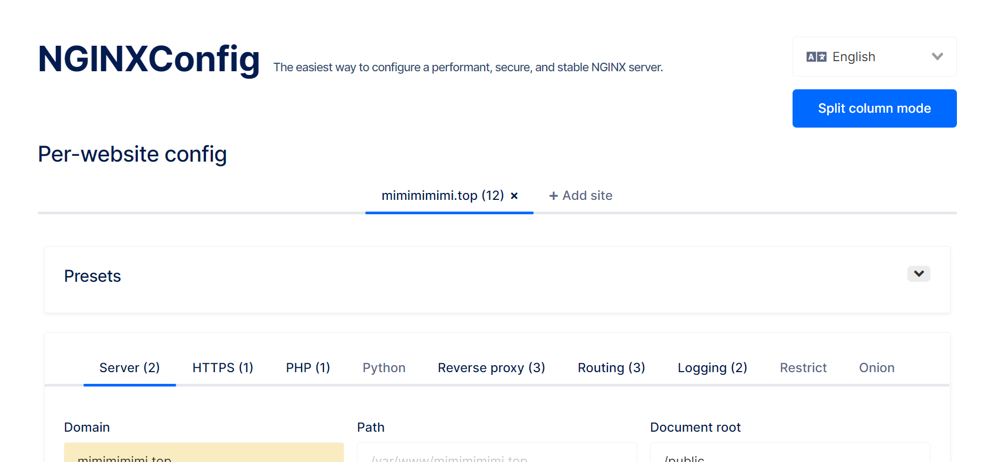

还记得去年服务器备案申请域名折腾了两三天, 又是拍照又是上传身份证的, 记得当时回访的网警还问我网站内容做好上线了吗? 我答没有, 他便和我说那等我弄好了再申请下, 当时想着只是做技术上的尝试也没在意, 这事放了好久, 前几天发现域名居然通过了,备案也成功了, 这就可以折腾起来了
首先nginx配置我推荐用这个线上的NGINXConfig,可以根据预设或自定义一步步的配置nginx,完成后可以直接拷贝或下载配置

我这边是docker启动的nginx,所以一定要注意本地挂载目录和nginx配置中要对应一致,由于对生成配置目录的不熟悉导致我这里频繁改了好多次
接下来就是通过certbot配置letsencrypt证书了, 这里要注意的是首次启动先将nginx设置为http即可,certbot生成证书时要先能访问此服务, 通过certbot的webroot来获取证书,certbot会根据-w参数的配置指定路径,之后在服务的这个路径下放置校验文件,后续会向服务的路径(-w设置的)发起请求来校验文件,服务可访问且校验通过后才能得到证书, 所以对应nginx添加配置,注意/var/www/_letsencrypt多处要配置一致
1
2
3
4
5
|
location ^~ /.well-known/acme-challenge/ {
root /var/www/_letsencrypt;
}
|
由于nginx和certbot服务都是docker 容器, 所以对应的校验路径要两容器都能读写访问,所以要注意把校验路径配置一致,挂载到本地同一目录, 此处我将/var/www/_letsencrypt统一挂载到/home/nginx,nginx的本地挂载目录下
1
2
3
4
5
6
7
8
9
10
11
|
version: '3'
services:
docker_certbot:
image: certbot/certbot
container_name: certbot
volumes:
- /etc/letsencrypt:/etc/letsencrypt
- /var/lib/letsencrypt:/var/lib/letsencrypt
- /home/nginx:/var/www/_letsencrypt
command: certonly --webroot -d www.mimimimimi.top --email 393223434@qq.com -w /var/www/_letsencrypt -n --agree-tos --force-renewal
|
certbot得到证书后,nginx同样需要可读, 所以将两服务得证书目录统一挂载到本地同目录/etc/letsencrypt下,此时再将nginx配置成https,注意nginx配置中对应ssl部分要做相应修改,目录一致 例如:
1
2
3
4
|
ssl_certificate /etc/letsencrypt/live/mimimimimi.top/fullchain.pem;
ssl_certificate_key /etc/letsencrypt/live/mimimimimi.top/privkey.pem;
ssl_trusted_certificate /etc/letsencrypt/live/mimimimimi.top/chain.pem;
|
1
2
3
4
5
6
7
8
9
10
11
12
13
14
15
16
17
18
19
20
|
version: '3'
services:
docker_nginx:
user: root
restart: always
image: nginx:alpine
container_name: nginx
ports:
- '80:80'
- '443:443'
volumes:
- /home/nginx/nginxconfig.io:/etc/nginx/nginxconfig.io
- /home/nginx/sites-enabled:/etc/nginx/sites-enabled
- /home/nginx/sites-available:/etc/nginx/sites-available
- /home/nginx/nginx.conf:/etc/nginx/nginx.conf
- /home/nginx/public:/var/www/mimimimimi.top/public
- /etc/letsencrypt:/etc/letsencrypt
- /home/nginx:/var/www/_letsencrypt
|
修改后别忘了重启nginx镜像
由于免费证书90天失效,之后还可以在服务器中通过crontab设置定时任务重起certbot容器,来重新生成证书
参考修改
certbot running-with-docker
certbot webroot
参考
定时更新参考
代码留存